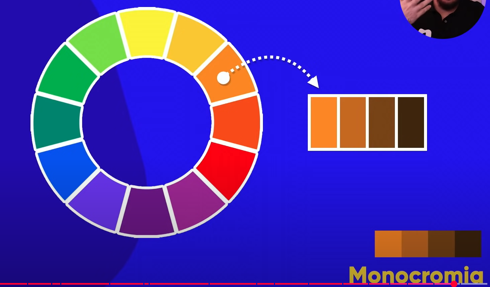

Harmonia das Cores
Ferramentas:
Índice:
Exemplo de cores primárias: Amarelo, Vermelho e Azul.

Exemplo de cores secundárias: Laranja, Violeta e Verde.

Exemplo de cores terciárias: Amarelo-esverdeado, Amarelo-alaranjado, Vermelho-alaranjado, Vermelho-arroxeado, Azul-arroxeado e Azul-esverdeado.

Temperatura de Cores: cores frias e quentes sempre terão 2 hemisférios

Cores complementares é sempre a cor oposta do círculo de cores.

Cores análogas: são as cores "vizinhas" ou similares.

Cores análogas e uma complementar

Cores análogas relacionadas

Cores intercaladas

Cores triádicas

Cores em quadrado

Cores tetrádicas

Monocromia modifica a saturação e o brilho da cor

Voltar ao início